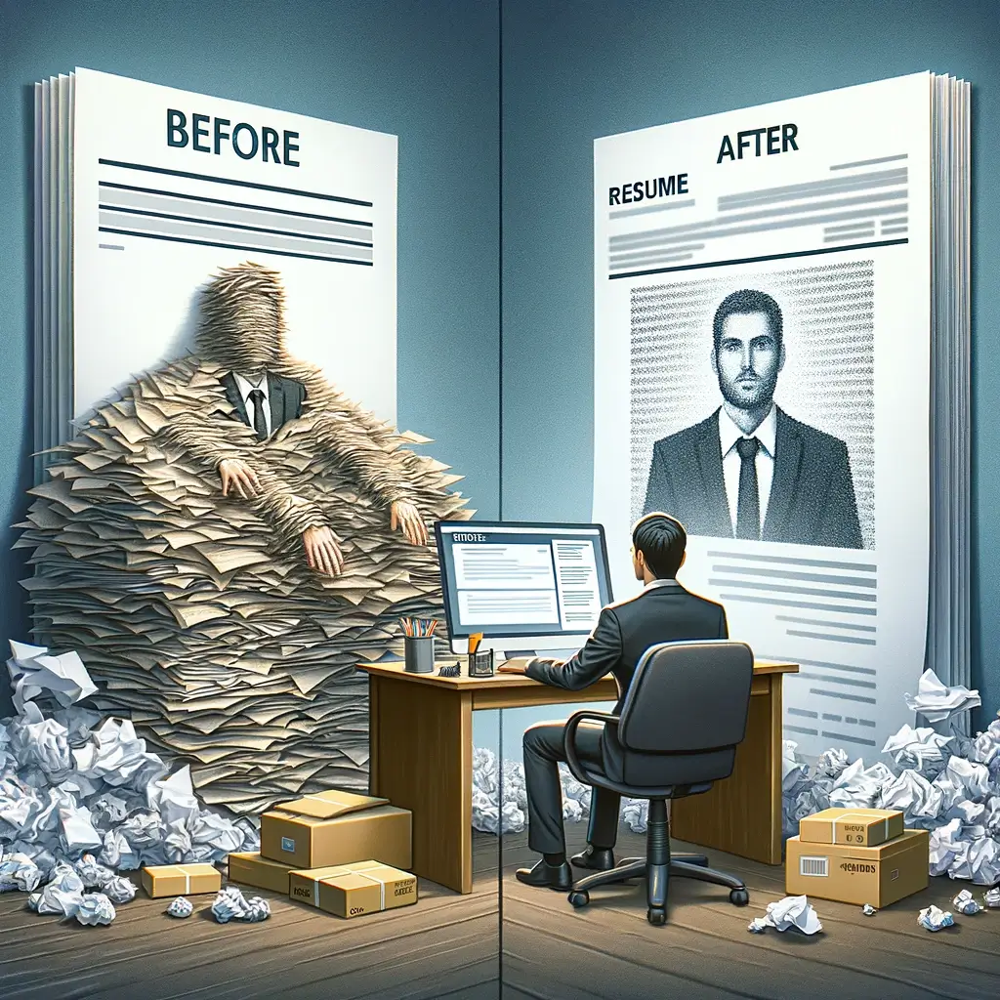

Blogs
Unlocking Career Opportunities: The Importance of Keeping Your Resume Updated
In today's fast-paced job market, where opportunities abound and competition is fierce, the importance of keeping your resume updated cannot be overstated. Picture this scenario: you come across the job listing of your dreams, your heart races with excitement, but as you glance at your resume, you realize it's outdated. Opportunity knocks, but you're not ready to answer. This is a situation many professionals face, including individuals like Umair, whose story sheds light on the critical importance of regular resume updates.
The Evolving Job Market:
The job market is constantly evolving, driven by rapid technological advancements and shifting industry landscapes. Roles that were in demand yesterday may become obsolete tomorrow, replaced by emerging positions requiring entirely new skill sets. This phenomenon, known as digital transformation, has become a driving force behind the evolution of job roles and skill requirements. To stay relevant in such a dynamic environment, professionals must adapt and continuously update their skill sets to meet the demands of the modern workplace.
Umair's Missed Opportunity:
Umair, a seasoned tech professional, found himself at a crossroads when a coveted job opportunity presented itself. Excited about the prospect, he eagerly submitted his resume, only to realize later that it failed to showcase his latest achievements and skill enhancements. Despite his qualifications and experience, Umair's outdated resume became a barrier to securing the position he desired. This missed opportunity served as a wake-up call for Umair and highlighted the detrimental impact of neglecting to update one's resume regularly.
Adaptability in Career Development:
In today's competitive job market, adaptability is key to success. Professionals must be agile in responding to changing industry trends and evolving job requirements. By regularly updating their resumes, individuals demonstrate a commitment to growth and learning, positioning themselves as valuable assets to prospective employers. Studies have shown that candidates with up-to-date resumes are more likely to secure job interviews and receive offers, underscoring the importance of maintaining a current and relevant professional profile.
Leveraging Technology:
Fortunately, advancements in technology have made the process of resume updating more efficient and accessible than ever before. With the advent of free resume builders and online platforms, professionals can easily create and customize polished resumes that reflect their skills and experiences. Tools like One Crate's free resume builder empower individuals to craft compelling narratives that showcase their unique value proposition to potential employers. By leveraging technology, professionals can streamline the resume updating process and ensure their profiles remain competitive in today's digital age.
Cultivating a Habit of Continuous Improvement:
Keeping your resume updated is not just a one-time task; it's a habit that should be cultivated throughout your career journey. Set quarterly reminders to review and update your resume, documenting new accomplishments, skills, and experiences as they occur. Additionally, prioritize networking and professional development activities to expand your skill set and enhance your resume content. By adopting a mindset of continuous improvement, you'll position yourself for success in an ever-changing job market.
Conclusion:
In conclusion, the importance of keeping your resume updated cannot be overstated. Umair's story serves as a poignant reminder of the consequences of neglecting this critical aspect of career development. By staying agile, leveraging technology, and cultivating a habit of continuous improvement, professionals can unlock new opportunities and propel their careers to new heights. So, take charge of your professional trajectory, embrace the art of resume storytelling, and let your career aspirations soar.
About One Crate

Las Vegas Lcoation 217 Las Vegas BLVD Las Vegas,NV 89101


https://www.onecrate.com
Informations
Please use the Online Resume Builder to Create Desired one if you need any specific details or required any epxert help feel free to contact us